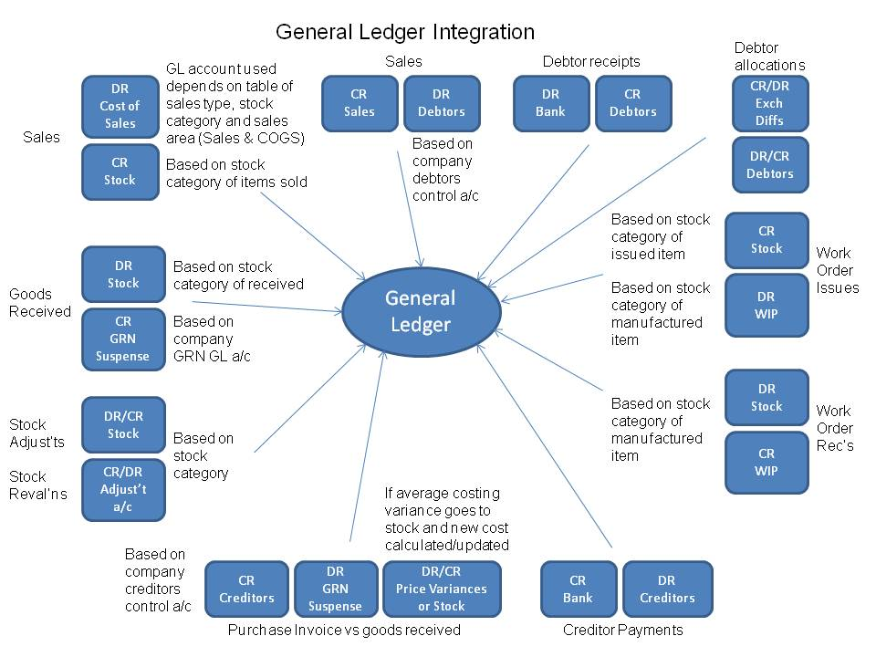
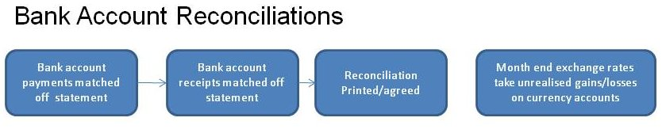

The general ledger is the accounting hub that is central to the "sub" ledgers for creditors (Accounts Payable), debtors (Accounts Receivable) and stock (inventory). All entries in the sub ledgers are also represented by entries in the general ledger. It is the integration set-up that determines how entries in the sub-ledgers are reflected in the general ledger. Most activity in the general ledger will be automatically created from the activity in the sub-ledgers with receivables, payables and stock administration.

However, there are also facilities to:
The account section is the top level object for the General Ledger. It is the container for everything within the GL. They are created or amended from the Maintenance menu in the General Ledger module. There are two sections that cannot be removed or renamed, these are the Income and the Cost of Sales sections
The account group is the parent object of a general ledger account. Child accounts created inherit the properties of the account group - ie the account will be a profit and loss account if it belongs to an account group that is a profit and loss account, the child accounts will display in the trial balance (TB) together in the sequence determined by the account groups sequence in the trial balance (TB).
Using a numbering system inhibits the ability to manipulate the format of the trial balance ie you have to be able to change the account code to change where an account appears ie
10100 motor expense Copenhagen
10110 motor expenses The Hague
10120 motor expense Amsterdam
would be great but then if we wish to restructure so that Copenhagen expenses are all shown together and The Hague is now all shown together etc we will have to change the numbering. In web-erp all that is required is to change the account group. In the first situation we could have an account group for motor expenses and all these account numbers would be set up as belonging to the account group. We can decide whereabouts the account group should appear in the trial balance by changing the sequence in trial balance field. All accounts in the account group will show together. If we decided to change the trial balance to show The Hague expenses together as a separate group of costs, we could create an account group for the The Hague selling costs - or whatever, and change the motor expenses the Hague account no 10110 to be a member of that account group.
Account groups require the sequence in the trial balance to be specified and also whether the accounts in that group will be profit and loss accounts or balance sheet accounts.
A balance sheet account is one where only the balance at the end of the period concerned is of interest. A profit and loss is one where we are interested in the movement over the period. eg. Motor expenses we are not concerned with the balance at the end of the month so much as how much was spent over the period of the profit and loss. However, for a bank account we wish to know what we have now as a balance not the movements in the account. As noted accounts created as a member of an account group will inherit the properties of the account group ie if the account group is a balance sheet group then the accounts will be interpreted as balance sheet accounts.
Say we wish to report on "The Hague", "Compenhagen" and "Amsterdam" we can set up an account group for each, with a series of sub-account groups under each of these account groups.
- The Hague -> Overheads -> Motor Expense
- The Hague -> Overheads -> Advertising
- The Hague -> Overheads -> Postage Stationery
- The Hague -> Overheads -> Repairs Maintenance
Any number of general ledger accounts can be defined, the structure of the accounts is goverened by the Account Group - which defines whether an account is a balance sheet or profit and loss account and whereabouts it should appear in the trial balance. All accounts are displayed under the heading of the account group so the numbering of general ledger accounts has no bearing on the display of the trial balance or accounts (in contrast to legacy systems).
General ledger accounts are the cost holders for all accounting in webERP. Whilst it is possible to run webERP to keep track of just stock or debtors/accounts receivable or accounts payable, it is only when these functions are all integrated with the accounting hub that the real value of webERP's integrated design is fully realised. With all costs recorded in accounts payable, bank accounts, accounts receivable, stock, shipment costing, contract costing etc and with the correct configuration, the accounts almost drop out with minimal additional manual inputs required. Useful management information is therefore available in real time as the transactions are made. Next day reporting with accurate stock cut off and accruals all automatically made by the purchasing system is possible.
To create a general ledger account, click on:
Main Menu->Maintenance: GL Account
The list of existing general ledger accounts will display - together with the whether the account group of the account is a P & L. To enter a new account all that is required is to give it a number and a description and select an existing account group.
General Ledger tags provide an alternative way of viewing General Ledger transactions. Each income or expenditure transaction can be given its own tag, and then reports acan be run based on tags.
As an example consider an organisation with several vehicles and the organisation wishes to report on how much each vehicle costs to run. A tag can be setup for each vehicle, and then when there is any expense, such as fuel, maintenance, licensing, insurance etc then each transaction can be tagged to individual vehicles, and then a report be produced for the cost of each tag corresponding to each vehicle.
Tags effectively add another dimension to the general ledger - or "cost centre" functionality. There is a "tag" profit and loss account so you can produce a p & l for each "tag".
The tag is offered up each time you create a general ledger transaction or purchase invoice or stock adjustment so all general ledger transactions can be captured with the "tag" or "cost centre" they relate to and the P & L can be reported by "tag" (or "cost centre").
Each Profit and Loss General Ledger code can have a monthly budget set against it. To enter these budgets select GL Budgets from the maintenance menu in the General Ledger Module. From this first screen you can then select the GL account that you wish to enter the budget for.
The user is then presented with a screen split into 3 sections. The first section is for the previous financial years figures, and shows the actual figures, compared to the budget. The budget figures cannot be changed.
The next two sections are for this financial year, and next financial year respectively. For these two years you can amend the monthly budget for each year. If the amount is split evenly over the year, you can input a total budget figure and then click on the aportion budget button, which will distribute the budget evenly.
Certain general ledger accounts can be defined as bank accounts - as many bank accounts as needed can be defined. At the time of defining a general ledger account as bank account the currency of the bank account must also be specified. General ledger accounts defined as bank accounts can be reconciled to bank statements using the matching facilities - all receipts and payments show in the currency of the bank account for easy matching off statments. Entries made to bank accounts using receipts or payments, also create a total receipt or payment, which is retained for the purposes of matching off the bank statements. Using the bank payments page, general ledger payments can be analysed to any number of other general ledger accounts, but only one entry to the bank account is made. This page also allows payments to supplier accounts to be created. Similarly, using the receipt entry page, a series of receipts from customers which may all have been banked together can be deposited as one amount to a bank account. There is only one amount appearing on the statement as the total of all these receipts, this bank account transaction is created and available for matching deposits off the bank statements.
Bank accounts are defined from the setup tab from the link to Bank Accounts Maintenance. There is facility to enter the name of the account, the currency of the account, the bank account number and the address of the bank if required, as well as selecting the general ledger account to which it refers. There are links to edit existing bank account records and to delete them. However, once defined as referring to a particular general ledger code it is not possible to change the general ledger code of the bank account. This is because there would be entries made to this account. Similarly, if bank transactions have been created using this bank account it is not possible to delete it. The bank account transactions must be purged first (but currently no facility exists to purge bank transactions). It is not possible to change the currency of a bank account once there are transactions against it.
Once all receipts and payments are matched to bank statements, the bank reconciliation statement can be printed which should show how the current general ledger balance reconciles to the bank statement for this account. The reconciliation also has an option available for bank accounts set up in other than the functional currency of the business (local currency), to post differences in exchange. The balance of the account is maintained in local currency in the general ledger and for the purposes of the bank reconciliation this is converted to the bank account currency at the exchange rate in the currencies table (see Setup -> Currency Maintenance) - this rate can be changed manually to the rate of the day and the foreign currency balance on the account will change - to correct this balance an exchange difference needs to be recorded. Having worked through the matching of receipts and payments to the bank statements - the bank statment balance can be entered to compare against the system balance - a correcting entry is then made to the GL to post the difference on exchange. The posting to the general ledger is back dated to the end of the preceeding month - since it is assumed that the reconciliation may be a few days or a week behind the current date.
From the general ledger tab, the first link under transactions is Bank Account Payments.
The following data is required:
Payments can take two forms - either it is a general ledger payment or it is a payment to a supplier. General ledger payments require an analysis of how the payment should be posted to the general ledger. General ledger accounts can be specified either as the account code directly (if the account code is known) or by selecting from the select box. Any narrative applicable to the general ledger amount can be entered too - and the amount to be posted to the selected/entered account. The total payment is taken as being the sum of all the entries made. If the total of all entries made is negative then this is entered as a negative payment - these are accepted to allow for correction of data entry errors. Payments are always entered in the curreny of the payment - the conversions are handled by the system for general ledger postings etc.
This script imports bank transactions. It works with bank accounts that have an import format already defined.
The file format used by your bank for statement exports is defined by system administrators in Main Menu > General Ledger > Maintenance > Bank Accounts.
The system allows for the receipt of money into any of the bank accounts that have been set up and for the income to be credited to any GL account. Receipts can be entered in any currency, and webERP will track the exchange rates correctly
To initiate a receipt choose the 'Bank Account Receipts Entry' item from the Transactions menu within the General Ledger module.
Firstly, the receipt header information is required, the bank account - one of the previously defined bank accounts (see setup), the date the batch of receipts are banked, the currency and exchange rate of the banking and the type of receipt together with any narrative. The currency can be selected from the defined currencies (see setup). The receipt types can also be selected - they are defined in config.php. Once this information is entered it must be accepted before the receipts in the batch can be entered.
Secondly the details of each receipt line must be entered. This consists of the GL tag (if any is to be assigned to this line), the GL account code to post this line to, the amount of the receipt, in the currency selected in the header, details of the payees bank, and any narrative you wish to be entered against this receipt in the general ledger.
Once all the lines have been entered you you can click on the button to accept and process the batch. Once this has been done, the batch cannot be amended.
When a bank statement arrives, the transactions that have cleared through the bank, must now be matched off against the transactions in webERP. THis can be done by selecting "Bank Account Receipts Matching" or "Bank Account Payments Matching" from the Transactions menu in the General Ledger module.
Next select the bank account that the statement is for, and use the different options available to filter how the transactions are shown. Then it is just a matter of ticking off the transaction on webERP and on the bank statement.
Enter general ledger journals between any general ledger accounts - except bank accounts. These can also be made to reverse automatically in the following period. Further journals can be posted to any period future or previously - the period is determined by reference to the date entered.
Bank Accounts are automatically integrated with the general ledger and cannot exist separately without the GL being used. Every transaction is recorded in two places (double entry) eg. A bank account payment reflects in the bank account and also in the expense account that is was paid for - eg. stationery, fuel, entertaining, advertising or whatever. One entry goes as a debit on the left and the other as a credit on the right - when you look at the trial balance the debits should tie up with the credits ie the trial balance - a list of the general ledger balances should have balancing debit total and credit totals.
With respect to the sales (AR) and purchase (AP) ledgers, the integrated general ledger postings that are created automatically for transactions in these modules can be turned off in the company preferences screen by setting each of the integration flags to No.
Integrated general ledger postings do provide a good way of building up the business's accounts from activity in these sub ledgers.
You can choose between two levels of integration:
This creates general ledger journals for each sale as follows:
DR the debtors control account - defined in the company preferences screen
CR the sales account - defined with reference to the customer sales area, stock category of the item being sold and the sales type (price list) of the customer. This provides great flexibility as to how sales should be postedCR the tax to the taxgl account defined in the tax authorities (ie the general ledger code of the tax authority of the customer branch). It is also possible to have just one general ledger account for all sales by defaulting ANY sales area, ANY stock category and ANY sales type with a single general ledger code - see later section on sales general ledger codes.
the reverse takes place for a credit note.
When cash is received:
CR the debtors control - defined in company preferences DR the bank account - defined in the bank account setup.There are also general ledger entries for discounts and differences on exchange which have been ignored for the purposes of this introduction.
This level of integration ensures that the list of balances of all customer accounts (in local currency) always ties up with the general ledger debtors control account.
For every sale:
CR stock value at the standard cost of each item sold - the stock GL account being defined in the stock categories record.
DR Cost of Goods Sales (COGS - or COS) with the same cost. - the COGS GL accounts are defined with similar flexibility as descibed for the Sales GL accounts under the setup menu under AR/AP options
the reverse happens for credits.
This enables the stock value to be continuously updated in the general ledger and always be equal to the stock valuation at standard cost.
This level of integration also has ramifications for stock adjustments, stock deliveries and stock cost changes.
For stock adjustments the quantity adjusted is extended by the standard cost and it is written on (CR) or off (DR) to the stock adjustment GL account as specified in the stock category record for that item.
For receipts of stock - the stock coming in is extended by the standard cost and the entry is to:
DR stock at standard cost x number received - the stock account being defined in the stock category record for the item being received.
CR GRN suspense at standard cost x number received - this account is specified again in the company preferences screen.
The two levels of general ledger integration are:
The level of general ledger integration is determined by reference to the flags in the company preferences page.
The general ledger accounts that are used in this level of integration are determined from several inputs.
A table of sales general ledger accounts is maintained and can be modified from the setup tab. When an invoice is created from the ConfirmDispatch_Invoice.php script the system uses a function defined in GetSalesTransGLCode.inc to look up the general ledger codes that are appropriate. By default this function uses the following logic:
Since the logic of how the general ledger account is determined is defined in this function it is relatively simple to change this to what is most appropriate for the business.
The freight recovery and the debtors control account used are those defined in the company preferences page.
The tax account used is the account defined in the tax authorities definition used for the customer being invoiced.
The general ledger accounts that are used for posting sales transactions are determined using the sales area, the sales type of the customer being invoiced/credited and the stock category of the item being invoiced/credited. A table of general ledger accounts is maintained and can be modified from the set up tab from the link "COGS GL Interface Postings". The same logic as above is applied and the function is defined in the same GetSalesTransGLCode.inc script to look up the appropriate GL codes. Again, since the logic of how the general ledger account is determined is defined in the function GetCOGSGLAccount, it is relatively simple to change this to suit the business.
The account to credit stock with for the cost of goods sold is determined by reference to the stock item being sold. The stock category of the item is retrieved and the general ledger codes applicable to the stock category are used.
The profit and loss accounts used for stock adjustments are also determined by reference to the stock category record.
The profit and loss account used for posting the variance between standard cost of a purchased item and its actual cost as invoiced is also determined from the stock category record.
The webERP General Ledger module has the following reports:
The Trial Balance is run from the Reports/Inquiries menu in the General Ledger module. It can be run for any range of periods, including running it over a financial year end. So for instance if the financial year end is 31st December, it is still possible to run it for a 6 month period from October to March. It can also be run for a range of months greater than 1 year. This provides great flexibility in the reporting system.
It can be run as a PDF which can be printed, emailed, saved to an archive etc, or can be viewed on screen.
Whilst viewing the on screen version, clicking on the account code takes you to the GL Account Inquiry screen for that account, and for the period range selected for the Trial Balance.
You can view the transactions for individual accounts, for a selected range of periods. To view an inquiry from the main menu, select "Account Inquiry" from the Reports/Inquiries menu in the General Ledger module.
You are then taken to an account selection screen, where you can search for an account either by it's code, or by it's description. From the list of possible accounts that you are shown, simply click on the button for the account code that you are interested in.
Now you will see a screen with a drop down list of GL codes, with the one you chose as the selected one. You can now choose to filter the inquiry by tag, or to show all transactions. Finally a select box with all defined periods will be shown, and the current month will be highlighted. You can drag across multiple periods to highlight whatever periods you require.
Once this is done clicking on Show account transactions will list all the transactions for the chosen account, and will be listed and totalled by period.
You can also enter the account inquiry via any of the top level reports, simply by clicking on the account code in those reports.
To print the inquiry, simply click the printer icon in the top right of the table, and the inquiry will be printed.
Using this option you can produce a pdf report of all transactions for selected accounts, over a selected period. To produce this report, use the "Account Listing" option from the Inquiries/Reports menu on the General Ledger module.
You can select a range of accounts, by clicking and dragging within the Accounts select box, and likewise you can select a range of periods by clicking and selecting a range within the periods selection box.
The report can also be filtered by individual tag, or all tags can be shown
Using this option you can create a csv file of all transactions for selected accounts, over a selected period. This file can be opened by any spreadsheet package for you to use the data to produce any reports you may want. To produce this report, use the "Account Listing to CSV File" option from the Inquiries/Reports menu on the General Ledger module.
You can select a range of accounts, by clicking and dragging within the Accounts select box, and likewise you can select a range of periods by clicking and selecting a range within the periods selection box.
The report can also be filtered by individual tag, or all tags can be shown
You can produce a list of all general ledgedrs that have been produced within a given date range, and/or a range of journal numbers. To do this, select thje "General Ledger Journal Inquiry" from the Reports/Inquiries menu in the General Ledger module.
webERP will tell you the possible journal number range by giving the highest and lowest numbers that it currently has in the system. You can choose any numbers within that range to show in the inquiry.
This will produce a table of all journals, with their individual journal lines for the criteria specified. To print this table, just click on the printer icon in the top right hand corner.
You can produce a pdf of individual journals, by clicking on the "print" link at the end of the first line of the required journal.
This script displays the bank reconciliation for a selected bank account.
The cheque payments listing function allows you to create a PDF summary of all payments made from the bank account you specify, within a date range that you specify.
To access this functionality, choose "Cheque Payments Listing" from the Reports/Inquiries menu of the General Ledger Module
This inquiry allows you to view all bank transactions for a selected date range, and the inquiry can be filtered by matched or unmatched transactions, or all transactions can be chosen.
To prnt this inquiry just click on the printer con in the top right hand corner of the table.
The inquiry can be selected by choosing "Bank Transactions Inquiry" from the Inquiries/Reports menu in the General Ledger module.
Balance Sheet (or Statement of Financial Position) is a summary of balances. Assets, liabilities and ownership equity is listed as at a period end. It be accessed by choosing the "Balance Sheet" option from the Reports/Inquiries menu in the General Ledger module.
The balance sheet has three parts: assets, liabilities and ownership equity. The main categories of assets are listed first and are followed by the liabilities. The difference between the assets and the liabilities is known as equity or the net assets or the net worth or capital of the company and according to the accounting equation, net worth must equal assets minus liabilities.
webERP is an "accrual" based system (not a "cash based" system). Accrual systems include items when they are invoiced to the customer, and when expenses are owed based on the supplier invoice date.
The report can be run as a pdf file for later printing, emailing, or archiving, or it can be shown on screen. It can be run in summary mode - just showing the totals for each account group, or in detailed mode listing each general ledger account balance for all balance sheet accounts grouped by account group.
Profit and Loss statement (P&L), also called an Income Statement, or Statement of Operations can be accessed by choosing the "Profit and Loss Statement" option from the Reports/Inquiries menu in the General Ledger module. This is the statement that indicates how the revenue (money received from the sale of products and services before expenses are taken out, also known as the "top line") is transformed into the net income (the result after all revenues and expenses have been accounted for, also known as the "bottom line").
The purpose of the income statement is to show whether the company made or lost money during the period being reported. The P&L is reported for a user selectable range of periods.
The Profit and Loss report can be run as a pdf file for later printing, emailing, or archiving, or it can be shown on screen. It can be run in summary mode - just showing the totals for each account group, or in detailed mode listing each general ledger account balance for all profit and loss accounts grouped by account group.
The statement of changes in equity, often referred to as statement of retained earnings, details the change in owners' equity over an accounting period by presenting the movement in reserves comprising the shareholders' equity.
The purpose of the statement of changes in equity is to show the changes in a company's retained earnings during the period being reported.
The changes in equity report can be run as a pdf file for later printing, emailing, or archiving, or it can be shown on screen. It can be run in summary mode - just showing the totals for each account group, or in detailed mode listing each general ledger account balance for all profit and loss accounts grouped by account group.
The purpose of the statement of cash flows is to show where the company got their money from and how it was spent during the period being reported for a user selectable range of periods.
The statement of cash flows, also known as the successor of the old source and application of funds statement, reports how changes in balance sheet accounts and income affect cash and cash equivalents, and breaks the analysis down to operating, investing and financing activities (see GLCashFlowsSetup).
It can be generated using either direct method or indirect method. The main difference between them is the cash flows from operating activities, the first section of the statement of cash flows; there is no difference in the investing and financing activities sections.
The cash flows from operating activities will show lines such as cash from customers and cash paid to suppliers. "Major classes of gross cash receipts and gross cash payments are disclosed" (Reference: IAS 7, paragraph 18).
The cash flows from operating activities will include net income followed by the adjustments needed to convert the total net income to the cash amount from operating activities. "Profit or loss is adjusted for the effects of transactions of a non-cash nature, any deferrals or accruals of past or future operating cash receipts or payments, and items of income or expense associated with investing or financing cash flows" (Reference: IAS 7, paragraph 18).
Activities are reported on a net basis (only one line per account).
Report parameters:
Note 1. The "net profit for the period" is calculated from the accounts of the statement of comprehensive income.
Note 2. The "dividends" are calculated as "net profit for the period" minus "retained earnings". The "retained earnings" are calculated using the complement method; that is: the changes of retained earnings are equal to the opposite of changes in other statement of financial position accounts. This is done to correct the impact of the "net profit for the period" underreporting before the end of that period; so, if you have differences between dividents in this report and the real dividend payments, check retained earnings related accounts.
Warning! Although the standard states that "Net profit for the period", "Dividends", and "No effect on cash flow" are part of section "Operating activities", in this report they are shown separately to cover those accountants that use that practice.
The horizontal analysis, also known as trend analysis, is a financial statement analysis technique that shows changes in the amounts of corresponding financial statement items over a period of time. It is a useful tool to evaluate trend situations.
The statements for two periods are used in horizontal analysis. The earliest period is used as the base period. The items on the later statement are compared with items on the statement of the base period. The changes are shown both in currency (actual change) and percentage (relative change).
The actual change is calculated as selected_period - previous_period.
The relative change is calculated as (selected_period - previous_period) / previous_period * 100.
The debit amounts (assets) of the selected and previous statement of financial position are shown as positive numbers; the credit amounts (liabilities and equity) are shown as negative numbers.
The sources of funds are shown as positive numbers in the absolute variation column; the applications of funds are shown as negative numbers in the absolute variation column.
The increasing items are shown as positive numbers in the relative variation column; the decreasing items are shown as negative numbers in the relative variation column.
The debit amounts (revenues) of the selected and previous statement of comprehensive income are shown as positive numbers; the credit amounts (costs and expenses) are shown as negative numbers.
The changes that increases the net profit are shown as positive numbers in the absolute variation column; the changes that decreases the net profit are shown as negative numbers in the absolute variation column.
The increasing items are shown as positive numbers in the relative variation column; the decreasing items are shown as negative numbers in the relative variation column.
.
The changes that increases the retained earnings are shown as positive numbers in the absolute variation column; the changes that decreases the retained earnings are shown as negative numbers in the absolute variation column.
The increasing items are shown as positive numbers in the relative variation column; the decreasing items are shown as negative numbers in the relative variation column.
The source amounts (where the money has come from) of the selected and previous statement of cash flows are shown as positive amounts; the application amounts (where the money has gone) are shown as negative amounts.
The changes that increases the cash and cash equivalents are shown as positive numbers in the absolute variation column; the changes that decreases the cash and cash equivalents are shown as negative numbers in the absolute variation column.
The increasing items are shown as positive numbers in the relative variation column; the decreasing items are shown as negative numbers in the relative variation column.
An Income an Expenditure report can be produced, filtered by individual tags. So for instance following the example above, if you wished to view the costs associated with a particular vehicle you can run this report selecting the appropriate tag for the vehicle to report on to find the information.
As with the Profit And Loss report, this can be produced as an on screen report, or as a pdf.
The report can be run by selecting "Tag Reports" from the Reports/Inquiries menu in the General Ledger module.
To print the reports for your VAT/Sales tax/Purchase tax returns, choose the "Tax reports" option from the Reports/Inquiries menu in the General Ledger module.
You can choose a report for any of the tax authorities within which you operate and webERP will only print those transactions needed for your report.
The report can be run for one month, two months, a quarter, or for six months depending on the requirements for this particular tax authority.
You can run a summary report to get just the relevant totals, or a detailed report to list all the transactions within that total.
The report will be run as a pdf file for printing, emailing, archiving etc.
This software has methods to assign permissions or access rights to specific users and groups of users. The system controls the ability of the users to view or make changes to the contents of the GL accounts.
With this script, you can change a specific GL account access permissions for users:
If you need to copy the access rights to general ledger accounts from one user to another, you can use an utility. See: Copy Authority of GL Accounts from one user to another.
This software has methods to assign permissions or access rights to specific users and groups of users. The system controls the ability of the users to view or make changes to the contents of the GL accounts.
With this script, you can change a specific user access permissions to GL accounts:
If you need to copy the access rights to general ledger accounts from one user to another, you can use an utility. See: Copy Authority of GL Accounts from one user to another.
This software has methods to assign permissions or access rights to specific users and groups of users. The system controls the ability of the users to view and make changes to the contents of the bank accounts.
With this script, you can add or remove the access permission for each user that grants or denies his ability to view or update that bank account.
This software has methods to assign permissions or access rights to specific users and groups of users. The system controls the ability of the users to view and make changes to the contents of the bank accounts.
With this script, you can add or remove the access permission for each bank account that grants or denies the ability of that user to view or update it.